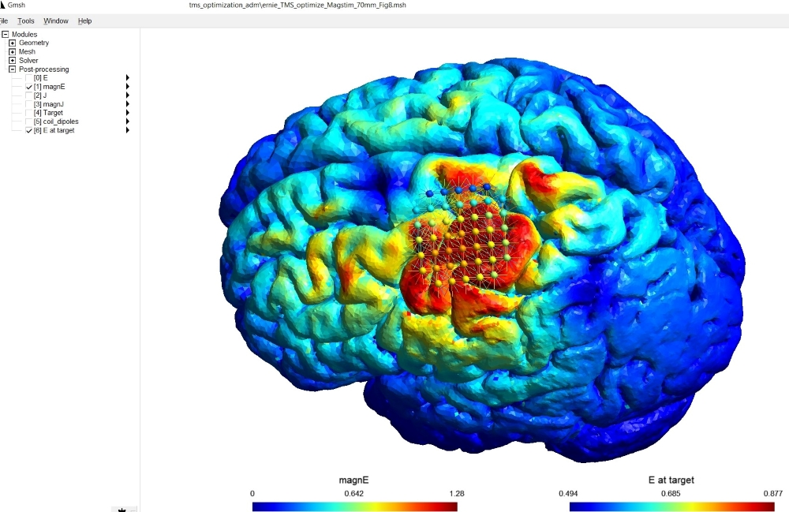

TMS Optimization¶
SimNIBS supports three different methods to optimize TMS coil positions.
TMS Optimization (Flat Coils)¶
These methods aim to maximize the electric field in a target region. Depending on the individual head anatomy and the targeted brain area, minor intersections of the optimized coil position with the scalp might still occur even for flat coil geometries.

General-purpose TMS Optimization¶
This approach also works for the bent and flexible coils, and systematically avoids intersections of the coil with the head. It can be used to maximize the electric field strength in a target area, or also just to best fit a flexible TMS coil on the head model at a predefined position.